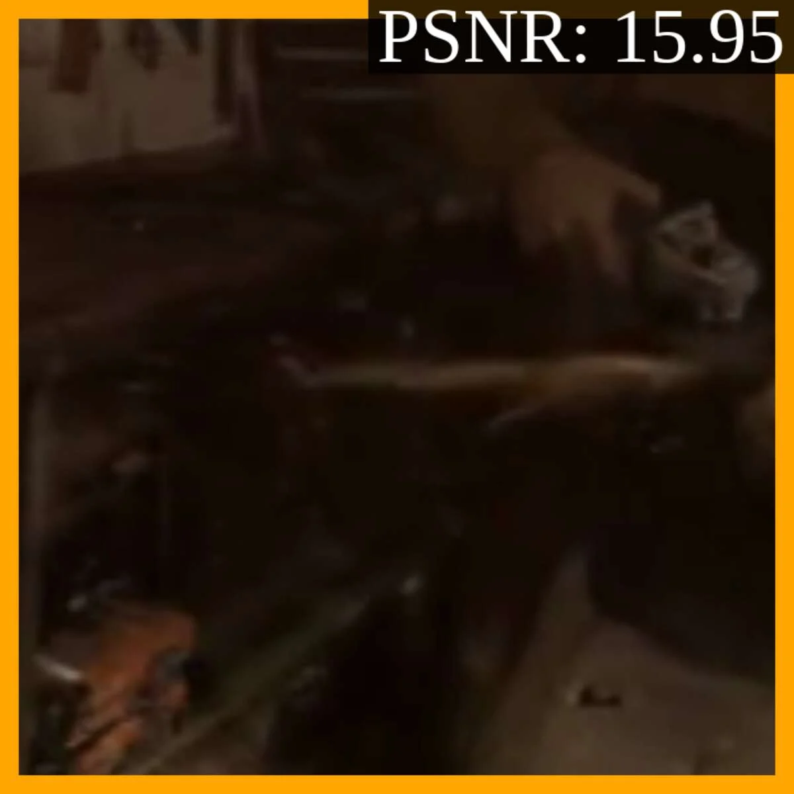
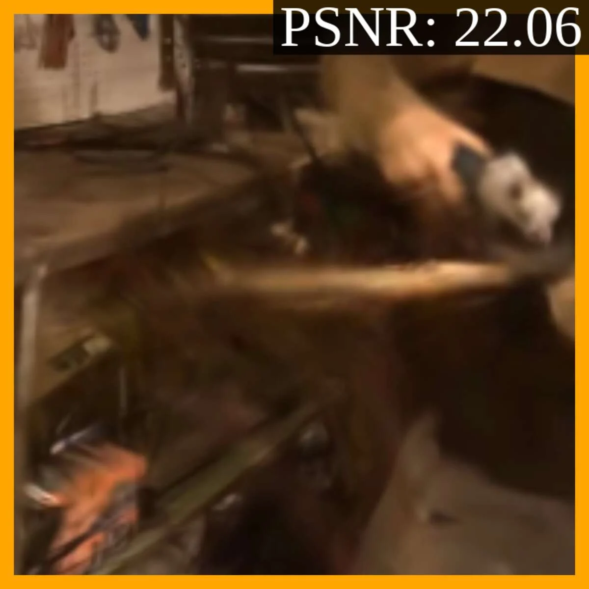
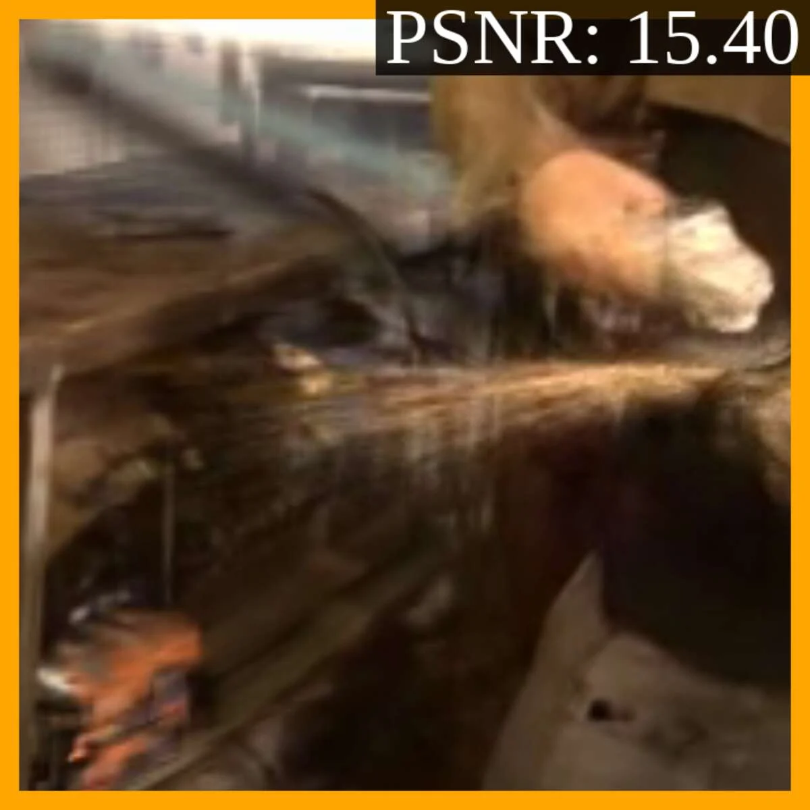
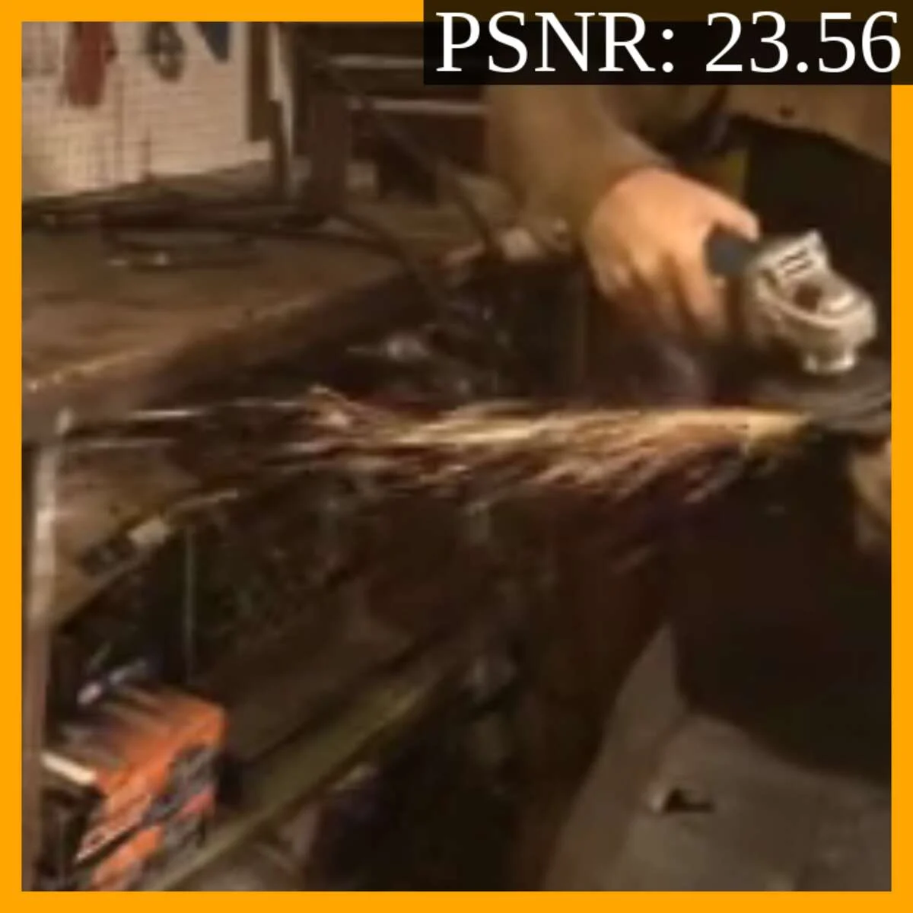
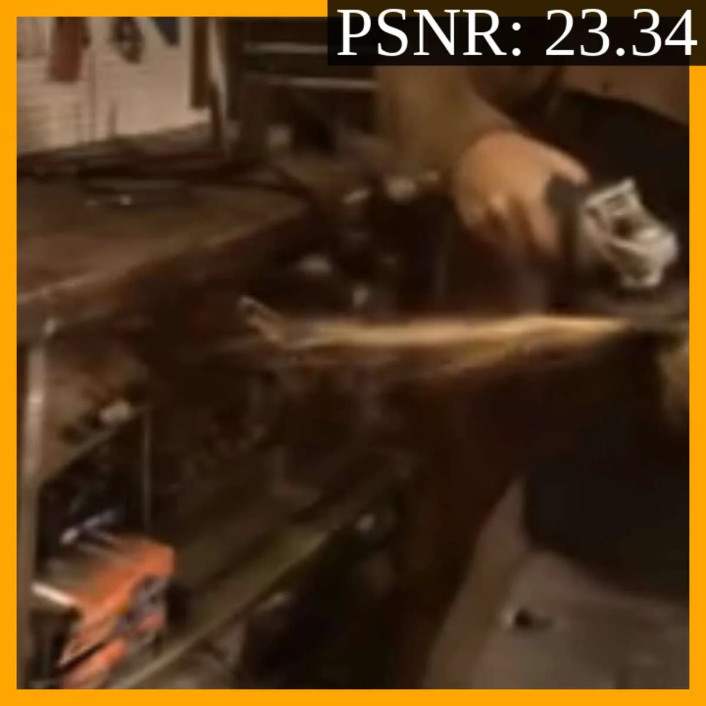
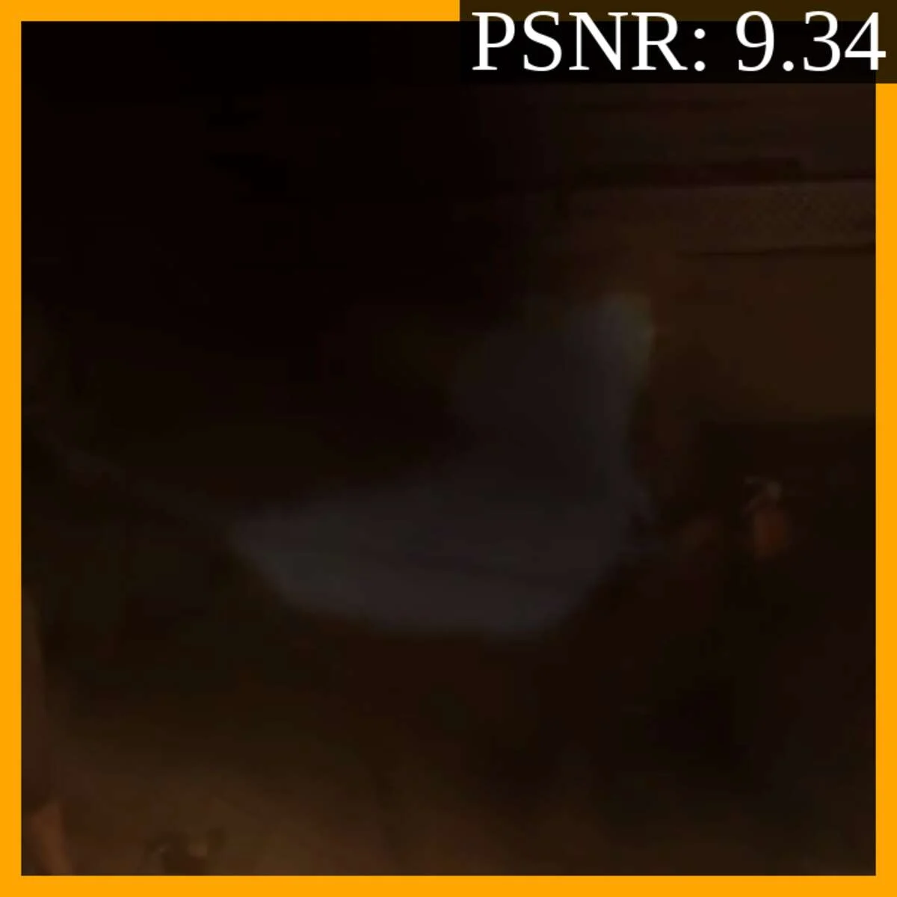
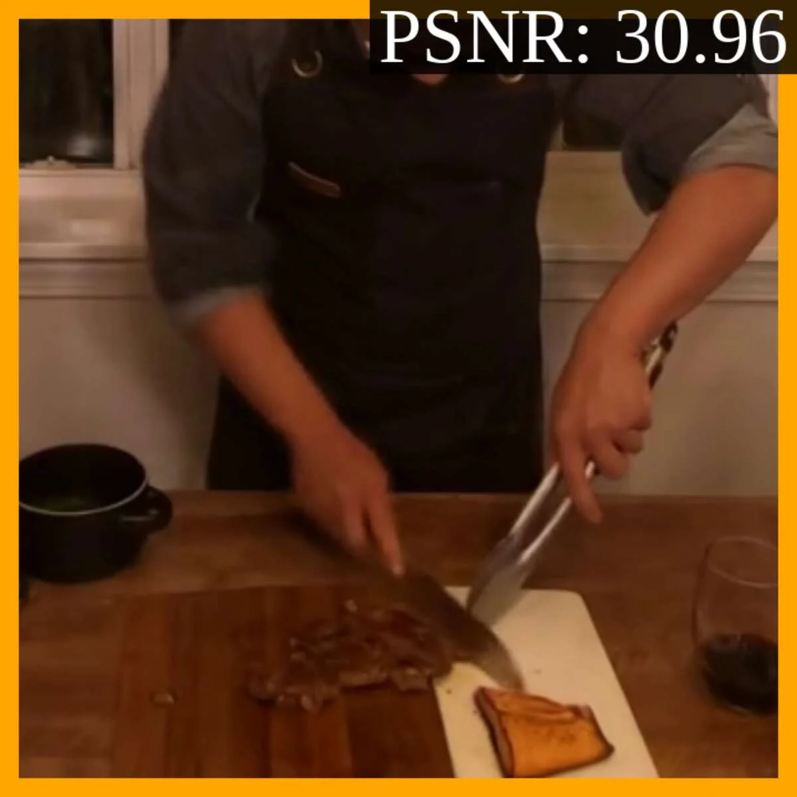

GraphiXS
Graphical X Splatting: A Graphical Model for 4D Gaussian Splatting under Uncertainty
SIGGRAPH 2026
Abstract
We propose a new framework to systematically incorporate data uncertainty in Gaussian Splatting. Being the new paradigm of neural rendering, Gaussian Splatting has been investigated in many applications, with the main effort in extending its representation, improving its optimization process, and accelerating its speed. However, one orthogonal, much needed, but under-explored area is the representation of data uncertainty. In standard 4D Gaussian Splatting, data uncertainty can manifest as view sparsity, missing frames, camera asynchronization, etc. So far, there has been little research to holistically incorporating various types of data uncertainty under a single framework.
To this end, we propose Graphical X Splatting, or GraphiXS, a new probabilistic framework that considers multiple types of data uncertainty, aiming for a fundamental augmentation of the current 4D Gaussian Splatting paradigm in a probabilistic setting. GraphiXS is general and can be instantiated with a range of primitives, e.g. Gaussians, Student’s-t. Furthermore, GraphiXS can be used to ‘upgrade’ existing methods to accommodate data uncertainty. Through exhaustive evaluation and comparison, we demonstrate that GraphiXS can systematically model various uncertainties in data, outperform existing methods in many settings where data are missing or polluted in space and time, and therefore is a major generalization of the current 4D Gaussian Splatting research.
- A new probabilistic framework to holistically incorporate data uncertainty as sparse spatial and temporal sampling in 4DGS.
- A new graphical model that can be instantiated with different primitives and used to ‘upgrade’ existing 4DGS methods.
- A new way of introducing stochasticity into the individual steps of 4DGS.
- New priors that effectively regulate model behavior, leading to more effective optimization.
Method
GraphiXS reframes 4D Gaussian Splatting as a probabilistic model, which is what keeps it robust when capture data is missing or corrupted. Below, we walk through how it represents that uncertainty and the pieces that make reconstruction work.
Modeling data uncertainty
Real captures are rarely complete. GraphiXS models the whole spectrum of uncertainty under one roof: missing cameras (spatial sparsity), dropped or low-frame-rate frames (temporal sparsity), unsynchronized cameras, and combined spatio-temporal corruption from faulty cameras.
A generative model for 4DGS
At its core, GraphiXS views 4D Gaussian Splatting as a generative process. Rendering becomes sampling, and camera pose and frame time become random variables rather than fixed observations, so every step can carry uncertainty. The animation below walks through this process.
Component confidence
Higher-order motion
Component motion follows a 4th-order model (position, velocity, acceleration, jerk, and snap), derived as the drift of a Brownian motion. It captures fast, non-linear dynamics that a linear motion model misses.
Three priors that regulate the model
Because infinitely many component configurations can explain the same data, GraphiXS imposes priors that steer the optimization toward well-behaved solutions: on motion, on opacity, and on shape. Toggle each below to see its effect.
GraphiXS is a framework, not a single model. We instantiate it with two primitives, GraphiGS (approximate Gaussian) and GraphiTS (Student’s-t), and further show it can ‘upgrade’ existing methods such as FreeTimeGS to handle uncertainty. We compare against 4DGS-1 [ICLR’24], 4DGS-2 [CVPR’24], Ex4DGS [NeurIPS’24], and FreeTimeGS [CVPR’25] on the Neural 3D Video and Google Immersive datasets.
Results
Drag the divider to compare GraphiXS against Ex4DGS under a faulty-camera setting, where the capture combines spatial and temporal corruption.







Citation
@inproceedings{yilmaz2026graphixs,
author = {Yılmaz, Doğa and Zhu, Jialin and Gong, Deshan and Wang, He},
title = {Graphical X Splatting (GraphiXS): A Graphical Model for
4D Gaussian Splatting under Uncertainty},
booktitle = {SIGGRAPH Conference Papers '26},
year = {2026},
location = {Los Angeles, CA, USA},
publisher = {ACM},
address = {New York, NY, USA},
doi = {10.1145/3799902.3811085},
}
Acknowledgments
This work was supported in part by the Dr. Rabin Ezra Scholarship (Charity No. 1116049), awarded to Doğa Yılmaz, and the UK Research and Innovation AIRR Innovator Award (0261-5654-9320-1).